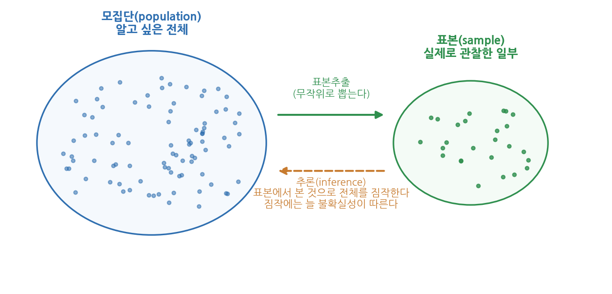
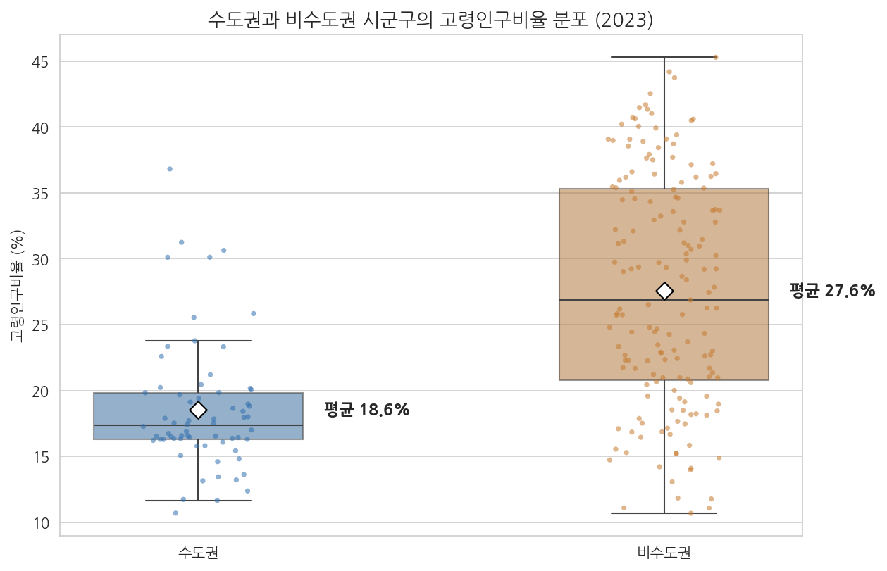
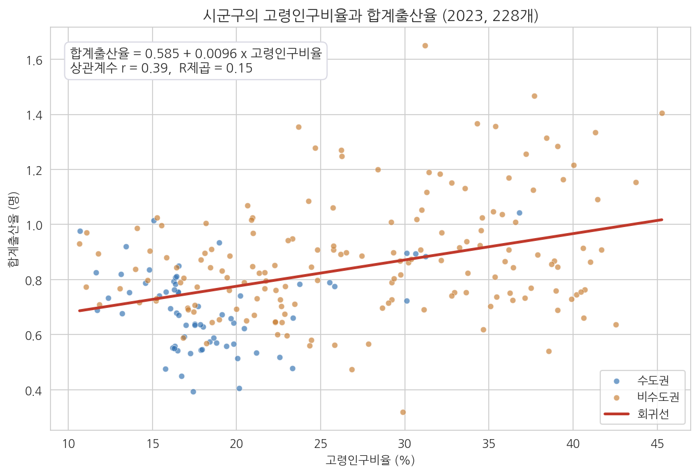
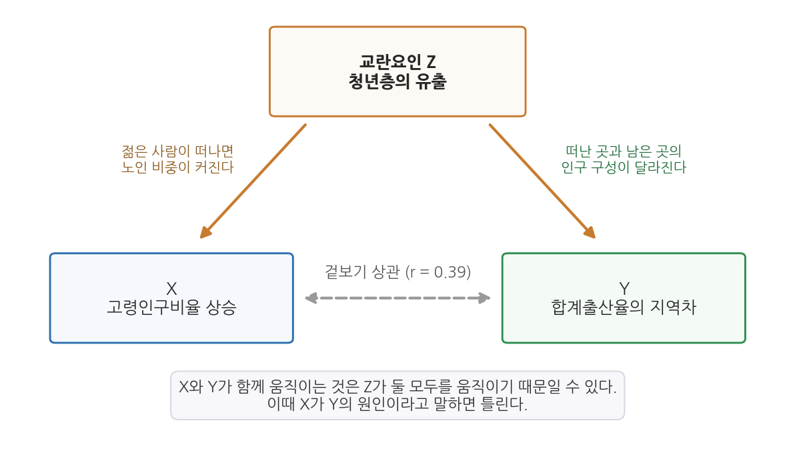

9주차 1회차. 통계로 정책 진단하기
세상에는 세 가지 거짓말이 있다. 거짓말, 새빨간 거짓말, 그리고 통계다. (마크 트웨인이 『자서전』에서 벤저민 디즈레일리의 말로 소개한 문구)
이 장에서 배우는 것
8주차 실습에서 여러분은 에이전트와 함께 여러 그림을 그렸다. 그중 수도권과 비수도권 시군구의 분포를 비교한 그림에서, 두 집단의 상자가 눈에 띄게 어긋나 있는 것을 보았을 것이다. 이 그림을 들고 보고하러 갔더니 과장이 이렇게 묻는다고 하자. "차이가 있어 보이긴 하는데, 이게 진짜 차이인가요? 어쩌다 그렇게 나온 건 아니고요? 그리고 차이가 있다는 게 정책적으로 무슨 뜻이죠?"
이 질문에 "그림을 보시면 차이가 보이잖아요"라고 답할 수는 없다. 눈에 보이는 차이가 우연의 산물일 수도 있다는 것, 그리고 우연인지 아닌지를 따지는 체계적인 방법이 있다는 것이 이번 주의 주제다. 지금까지 우리는 데이터를 요약하고(7주차) 그림으로 탐색했다(8주차). 이번 주에는 한 걸음 더 나아가, 데이터가 보여 주는 패턴이 믿을 만한 것인지 판정하는 도구, 곧 추론통계를 배운다. 그리고 그 도구가 가장 자주 오용되는 지점, 곧 "상관을 인과로 착각하는 함정"을 실제 한국 데이터로 확인한다.
구체적으로 다음을 배운다.
- 기술과 추론의 차이: "차이가 보인다"에서 "차이가 우연이 아니다"로 넘어가는 논리
- 모집단과 표본, 그리고 통계적 판단에 늘 따라붙는 불확실성
- 두 집단의 평균을 비교하는 t검정의 직관 (수식 없이)
- 두 변수의 관계를 요약하는 상관계수와 단순회귀
- p값이 무엇을 말하고 무엇을 말하지 않는지, 그리고 어떻게 남용되는지
- 상관과 인과를 혼동할 때 정책 판단이 어떻게 무너지는지 (교란요인)
이 장은 하나의 질문을 따라 전개된다. "눈에 보이는 차이와 관계를, 언제 어디까지 믿어도 되는가?"
1.1 "차이가 보인다"와 "차이가 있다"의 간격을 확인한다 (기술에서 추론으로) → 1.2 그 간격을 다루는 언어를 배운다 (모집단, 표본, 불확실성) → 1.3 두 집단의 차이가 우연인지 따진다 (t검정) → 1.4 두 변수의 관계를 직선 하나로 요약한다 (상관계수와 단순회귀) → 1.5 판정의 기준인 p값의 의미와 남용을 배운다 → 1.6 마지막 함정, 상관과 인과의 혼동을 다룬다.
1.1 기술에서 추론으로: "이 차이는 우연인가"
요약하고 그리는 것만으로 부족한 이유
지금까지 우리가 데이터로 한 일은 크게 두 가지였다. 평균이나 중앙값 같은 숫자로 요약하는 것, 그리고 히스토그램이나 산점도 같은 그림으로 그리는 것이다. 이렇게 손에 쥔 데이터가 어떤 모습인지 있는 그대로 정리하는 작업을 기술통계(descriptive statistics)라 한다. "기술(記述)"은 서술한다, 묘사한다는 뜻이다.
그런데 기술만으로는 답할 수 없는 질문이 있다. 가상의 예로 시작하자. 어떤 시가 청년 취업 프로그램을 두 개 동에서 시범 운영했다고 하자. 프로그램에 참여한 A동 청년 20명 중 9명이 취업했고(45%), 참여하지 않은 B동 청년 20명 중 7명이 취업했다(35%). 차이는 10%포인트다. 담당자는 "프로그램 효과가 확인되었다"고 보고하고 싶다.
그러나 잠깐 생각해 보자. 동전을 20번 던지면 정확히 10번 앞면이 나오는 일은 오히려 드물다. 9번이 나오기도 하고 12번이 나오기도 한다. 취업도 마찬가지다. 프로그램에 아무 효과가 없더라도, 20명씩 뽑아 비교하면 어느 한쪽이 우연히 몇 명 더 취업하는 일은 얼마든지 생긴다. 20명 중 9명과 7명의 차이는, 효과가 전혀 없어도 흔히 나올 수 있는 크기다. 그렇다면 이 10%포인트는 "효과의 증거"인가, "우연의 출렁임"인가.
이 질문에 답하려면 관찰된 차이를 우연이 만들어 낼 수 있는 차이의 크기와 견주어 보아야 한다. 관찰된 차이가 우연의 출렁임 범위 안에 있다면 "효과가 있다"고 말할 근거가 부족한 것이고, 우연으로는 설명되지 않을 만큼 크다면 비로소 "진짜 차이"라고 말할 수 있다. 이렇게 눈앞의 데이터를 넘어, 데이터가 말해 주는 것이 얼마나 믿을 만한지 판단하는 작업을 추론통계(inferential statistics)라 한다.
기술통계(descriptive statistics)는 손에 쥔 데이터를 요약하고 묘사한다. 평균, 표준편차, 히스토그램이 그 도구다.
추론통계(inferential statistics)는 손에 쥔 데이터로부터 그 너머(전체 집단, 또는 우연을 걷어 낸 진짜 패턴)에 대해 판단한다. 이 장에서 배우는 t검정, 회귀분석, p값이 그 도구다. 기술이 "무엇이 보이는가"라면 추론은 "보이는 것을 믿어도 되는가"다.
정책 현장에서 이 질문이 중요한 이유
"우연인가 아닌가"는 학자들의 결벽이 아니라 예산의 문제다. 위의 시범사업 예에서 "효과 확인"이라는 보고서 한 줄이 수십억 원짜리 전면 확대로 이어질 수 있다. 만약 그 10%포인트가 우연이었다면, 효과 없는 사업에 예산이 묶이고, 몇 년 뒤 평가에서 "효과가 사라졌다"는 이상한 결론이 나온다. 사라진 것이 아니라 처음부터 없었을 가능성이 큰데도 말이다. 반대로, 실제 효과가 있는데 "차이가 작아 보인다"는 인상만으로 사업을 접는 것도 손실이다. 인상이 아니라 절차를 따라 판단하자는 것, 이것이 추론통계가 정책 분석에 들어오는 이유다.
1주차에서 분석가의 세 역할을 지시·검증·해석이라 했다. 이번 주의 내용은 그중 해석의 무기다. 에이전트는 t검정이든 회귀든 몇 초 만에 실행해 준다. 그러나 그 결과표가 "무엇을 말해도 되는 증거인지"를 판단하는 일은 사람의 몫으로 남는다. 그리고 뒤에서 보겠지만, 에이전트는 이 해석 단계에서 꽤 자주 선을 넘는다.
1.2 표본과 모집단, 불확실성이라는 개념
일부를 보고 전체를 말하기
추론이라는 말의 뿌리에는 "일부를 보고 전체를 짐작한다"는 상황이 있다. 뉴스에서 흔히 보는 여론조사가 전형이다. 유권자 4,400만 명의 생각이 궁금하지만 모두에게 물을 수는 없으므로, 1,000명쯤을 뽑아 묻고 그 결과로 전체를 짐작한다. 이때 알고 싶은 전체를 모집단(population), 실제로 관찰한 일부를 표본(sample)이라 한다.

그림 9-1이 이 구조를 보여 준다. 왼쪽의 큰 타원이 모집단, 오른쪽의 작은 원이 표본이다. 위쪽 화살표(표본추출)는 모집단에서 일부를 무작위로 뽑는 과정이고, 아래쪽 점선 화살표(추론)는 표본에서 계산한 값으로 모집단을 거꾸로 짐작하는 과정이다. 이 그림에서 기억할 것은 화살표가 두 방향이라는 점이다. 데이터는 모집단에서 표본으로 흘러오지만, 우리의 결론은 표본에서 모집단으로 거슬러 올라간다. 그리고 거슬러 올라가는 짐작에는 반드시 오차가 낀다.
국 한 솥의 간을 볼 때 솥을 다 마시지 않는다. 잘 저은 뒤 한 숟갈만 떠먹으면 된다. 여기서 "잘 젓는다"에 해당하는 것이 무작위 추출이다. 무작위로 뽑은 표본은 평균적으로 모집단을 빼닮는다. 그러나 "평균적으로" 닮는다는 것이지, 매번 정확히 같다는 뜻은 아니다. 같은 솥이라도 숟갈마다 간이 조금씩 다르듯, 같은 모집단에서 뽑아도 표본마다 평균이 조금씩 다르게 나온다.
불확실성: 다시 뽑으면 조금 다르다
이 "조금씩 다름"이 추론통계의 출발점이다. 지지율 조사를 생각해 보자. 같은 날, 같은 방식으로 1,000명씩 두 번 조사해도 한 번은 41%, 한 번은 43%가 나올 수 있다. 모집단의 진짜 지지율은 하나인데, 표본이 달라지면 표본의 값이 출렁이는 것이다. 이 출렁임을 표본의 우연한 변동이라 부르고, 그 때문에 표본으로 내린 판단에는 늘 불확실성(uncertainty)이 따라붙는다.
여론조사 보도 끝에 붙는 "표본오차는 95% 신뢰수준에서 ±3.1%포인트"라는 문구가 바로 이 불확실성의 크기를 알려 주는 표시다. 뜻은 대략 이렇다. "이번 조사에서 42%가 나왔지만, 표본의 우연 때문에 진짜 값은 39%에서 45% 사이 어디쯤일 수 있다. 이런 식으로 범위를 제시하면 100번 조사 중 95번쯤은 진짜 값을 범위 안에 담게 된다." 중요한 것은 정확한 정의보다 태도다. 표본에서 나온 숫자를 점 하나가 아니라 범위로 받아들이는 것, 그것이 통계적으로 사고하는 사람의 습관이다.
이제 1.1절의 질문과 연결된다. 두 후보의 지지율이 42%와 40%로 조사되었을 때, 오차가 ±3.1%포인트라면 2%포인트의 차이는 우연의 출렁임 범위 안에 있다. 그래서 이런 경우 "경합"이라 보도하는 것이다. 두 집단의 차이가 우연인지 묻는 일은, 관찰된 차이를 이 출렁임의 크기와 비교하는 일이다. 다음 절의 t검정이 정확히 그 일을 한다.
모집단(population)은 우리가 알고 싶은 전체 집단이다.
표본(sample)은 그중 실제로 관찰한 일부다.
표본은 뽑을 때마다 값이 조금씩 달라지므로, 표본으로 모집단을 짐작하는 데는 늘 불확실성이 따른다. 추론통계는 이 불확실성을 없애는 기술이 아니라, 그 크기를 계산해서 판단에 반영하는 기술이다.
예리한 독자는 이상하다고 느낄 것이다. 우리의 시군구 데이터는 표본이 아니라 전국 229개 시군구 전부다. 전체를 다 갖고 있는데 무슨 추론이 필요한가. 통계학자들의 표준적인 답은 이렇다. 2023년의 값은 수많은 우연이 겹쳐 만들어진 하나의 결과라는 것이다. 그해에 누가 태어나고 누가 이사했는지에는 무수한 우연이 작용했고, 시간을 되돌려 2023년을 다시 살게 한다면 각 시군구의 수치는 조금씩 다르게 나왔을 것이다. 즉 우리가 가진 데이터는 "일어날 수 있었던 여러 2023년" 중 하나의 표본인 셈이다. 그래서 전수 자료에서도 "이 차이가 그런 우연의 출렁임만으로 생길 만한 크기인가"라는 질문은 성립한다. 다만 이런 자료에서 p값은 참고 지표로 받아들이고, 차이의 크기 자체를 함께 보고하는 것이 좋은 관행이다.
1.3 집단 비교의 논리: t검정
실제 질문: 수도권과 비수도권의 고령화는 정말 다른가
이제 실제 데이터로 간다. 7주차부터 다뤄 온 sigungu_2023.csv(전국 229개 시군구의 인구 지표, 행정안전부 주민등록인구통계와 국가데이터처(옛 통계청) 인구동향조사를 KOSIS에서 수집)에서, 시군구를 수도권(시도가 서울·경기·인천, 66개)과 비수도권(163개)으로 나누고 고령인구비율을 비교해 보았다.
- 수도권 66개 시군구의 고령인구비율 평균: 18.56%
- 비수도권 163개 시군구의 평균: 27.58%
- 평균 차이: 27.58 - 18.56 = 9.02%포인트

그림 9-2를 읽어 보자. 왼쪽 상자가 수도권, 오른쪽 상자가 비수도권이고, 상자 위에 흩뿌려진 점 하나하나가 시군구 하나다. 상자 안의 가로선이 중앙값, 흰 마름모가 평균이다. 여기서 두 가지가 보인다. 첫째, 비수도권의 상자가 통째로 위에 있다. 평균으로 9%포인트의 차이다. 둘째, 비수도권의 상자와 점들이 위아래로 훨씬 넓게 퍼져 있다. 비수도권 안에는 고령인구비율이 15% 아래인 도시부터 45%가 넘는 군까지 섞여 있다는 뜻이다. 집단 사이의 차이와 집단 안의 다양성이 한 그림에서 함께 읽힌다.
차이를 출렁임과 비교한다
9.02%포인트라는 차이가 우연인지 따져 보자. t검정(t-test)의 논리는 한 문장으로 요약된다. 관찰된 차이가, 우연만으로 생길 만한 차이의 몇 배인가.
숫자를 넣어 단계별로 따라가면 이렇다.
1단계. 두 집단의 평균 차이를 잰다.
27.58 - 18.56 = 9.02 (%포인트)
2단계. "우연만으로 생길 만한 차이의 크기"를 계산한다.
이 값은 각 집단 안의 흩어짐(표준편차: 수도권 4.93, 비수도권 8.77)과
관측치 수(66개, 163개)로부터 계산되며, 여기서는 약 0.916%포인트다.
이 값을 표준오차라 부른다.
3단계. 1단계를 2단계로 나눈다.
t = 9.02 / 0.916 = 약 9.85
4단계. 이 t값을 해석한다. 관찰된 차이(9.02)가 우연한 출렁임의
기준 크기(0.916)의 약 10배라는 뜻이다.
2단계의 직관만 챙기면 된다. 우연한 출렁임은 두 가지 상황에서 커진다. 각 집단 안에서 값들이 심하게 흩어져 있을 때(어쩌다 큰 값들이 몰려 뽑힐 수 있으므로), 그리고 관측치 수가 적을 때(몇 개의 우연이 평균을 크게 흔들 수 있으므로)다. 거꾸로 관측치가 많고 집단 안이 고르면 출렁임은 작아진다.
t가 9.85라는 것은, 두 집단이 실제로는 같은데 우연히 이만한 차이가 났다고 보기에는 차이가 너무 크다는 뜻이다. 우연의 출렁임은 기껏해야 1배, 크게 잡아도 2배나 3배 정도까지를 만들어 낼 뿐인데, 관찰된 차이는 그 10배 가까이 되기 때문이다. 실제로 이 검정의 p값(1.5절에서 자세히 배운다)은 0.05는커녕 소수점 아래 0이 18개나 이어질 만큼 작다. "수도권과 비수도권의 고령인구비율 차이는 우연으로 보기 어렵다"고 결론 내릴 수 있다.
t검정(t-test)은 두 집단의 평균 차이가 우연으로 생길 만한 크기인지 판정하는 방법이다. 핵심 산출물인 t값은 "관찰된 차이가 우연한 출렁임(표준오차)의 몇 배인가"를 나타낸다. t의 절댓값이 대략 2를 넘으면 우연으로 보기 어렵다고 판단하는 것이 관례이며, 정확한 판정에는 p값을 쓴다. 이 교재의 분석에서는 두 집단의 흩어짐이 달라도 안전하게 작동하는 웰치(Welch) 방식의 t검정을 쓴다.
한 가지 대비를 보태 두자. 같은 데이터에서 합계출산율을 비교하면 수도권 평균 0.690명, 비수도권 평균 0.877명으로 차이는 0.187명이다. 고령인구비율의 9%포인트에 비해 훨씬 작은 숫자처럼 보이지만, t값은 7.58로 여전히 크다. 출산율은 애초에 0.3에서 1.7명 사이에서 움직이는 변수라 0.187명이 결코 작은 차이가 아니기 때문이다. 차이가 큰지 작은지는 절대 숫자가 아니라 그 변수의 출렁임에 견주어 판단해야 한다는 것, 이것이 t검정이 가르쳐 주는 감각이다.
1.4 관계의 강도: 상관계수와 단순회귀
상관계수 복습: 함께 움직이는 정도
집단 비교가 "두 무리가 다른가"를 묻는다면, 이제 물을 것은 "두 변수가 함께 움직이는가"다. 8주차에서 산점도와 상관을 눈으로 익혔으니 핵심만 다시 정리한다. 상관계수(correlation coefficient)는 두 변수가 같은 방향으로 움직이는 정도를 -1과 1 사이의 수 하나로 요약한다. 한쪽이 클 때 다른 쪽도 큰 경향이면 양수, 한쪽이 클 때 다른 쪽이 작은 경향이면 음수, 아무 직선 경향이 없으면 0 근처다. 절댓값이 1에 가까울수록 점들이 직선에 바짝 붙는다.
실제로 계산해 보면, 228개 시군구(합계출산율이 결측인 대구 군위군은 제외된다. 7주차에서 본 그 결측이다)에서 고령인구비율과 합계출산율의 상관계수는 0.393이다. 고령화가 심한 시군구일수록 출산율이 오히려 높은 경향이 있다는 뜻이다. 많은 사람의 직관("늙은 지역은 아이도 안 낳을 것")과 반대 방향이라 당황스러울 수 있다. 이 수수께끼는 1.6절에서 풀기로 하고, 지금은 이 관계를 더 쓸모 있는 형태로 요약하는 도구를 먼저 배운다.
단순회귀: 관계를 직선 하나로 요약하기
상관계수는 관계의 방향과 강도만 알려 준다. 정책 분석에서는 한 걸음 더 나아간 질문이 필요할 때가 많다. "고령인구비율이 10%포인트 높은 지역은 출산율이 얼마나 다른가"처럼, 관계를 구체적인 수량으로 말하는 것이다. 이때 쓰는 도구가 단순회귀(simple regression)다. 회귀는 산점도의 점 구름을 가장 잘 관통하는 직선 하나를 찾아 준다. "가장 잘"의 기준은 각 점에서 직선까지의 세로 거리(예측이 빗나간 정도)를 전체적으로 가장 작게 만드는 것이다.

그림 9-3을 보자. 점 하나가 시군구 하나이고, 가로 위치가 고령인구비율, 세로 위치가 합계출산율이다. 파란 점이 수도권, 주황 점이 비수도권이며, 빨간 직선이 회귀선이다. 점들이 왼쪽 아래에서 오른쪽 위로 느슨하게 흘러가고, 회귀선이 그 흐름을 관통한다. 수도권 점들이 왼쪽 아래(젊고 출산율 낮음)에 몰려 있다는 것도 함께 보인다. 다만 점들이 직선에 바짝 붙어 있지는 않다. 같은 고령인구비율에서도 출산율이 0.5명대인 곳과 1.3명대인 곳이 공존한다. 관계는 있으되 느슨하다는 것, 이것이 이 그림에서 읽어야 할 전부다.
이 회귀선을 식이 아니라 문장으로 읽으면 이렇다. "고령인구비율이 0이라고 가정한 가상의 지역에서 예측 출산율은 0.585명이고(절편), 고령인구비율이 1%포인트 높아질 때마다 예측 출산율이 0.00955명씩 높아진다(기울기)." 여기서 기울기가 회귀분석의 주인공이며, 회귀계수(regression coefficient)라 부른다. 숫자를 넣어 예측을 만들어 보면 감이 온다.
고령인구비율 15%인 시군구의 예측 출산율
= 0.585 + 0.00955 x 15 = 0.585 + 0.143 = 0.728 (명)
고령인구비율 35%인 시군구의 예측 출산율
= 0.585 + 0.00955 x 35 = 0.585 + 0.334 = 0.919 (명)
고령인구비율이 20%포인트 차이 나는 두 지역의 예측 출산율 차이가 약 0.19명이다. 기울기에 20을 곱한 값과 같다. 회귀계수는 이렇게 "가로축 변수가 한 단위 다를 때 세로축 변수가 평균적으로 얼마나 다른가"를 알려 주는 환율 같은 숫자다.
R제곱: 직선이 얼마나 설명하는가
회귀 결과표에는 R제곱(R-squared)이라는 값이 함께 나온다. 이 회귀에서는 0.154다. 뜻은 이렇다. 시군구마다 출산율이 제각각인 그 차이(변동) 가운데, 고령인구비율 하나로 설명되는 몫이 약 15%라는 것이다. 나머지 85%는 이 직선이 설명하지 못한다. 주거비, 일자리, 혼인율, 보육 여건 등 다른 요인들의 몫이다. 그림 9-3에서 점들이 직선 주위로 넓게 흩어져 있던 것이 바로 이 85%다. R제곱은 0(직선이 아무것도 설명 못 함)과 1(모든 점이 직선 위) 사이의 값이며, 상관계수를 제곱한 값과 같다(0.393의 제곱이 약 0.154다).
회귀계수(기울기)는 가로축 변수가 1단위 높을 때 세로축 변수가 평균적으로 얼마나 높은지(또는 낮은지)를 나타낸다.
R제곱은 세로축 변수의 전체 변동 중 회귀선이 설명하는 비율(0에서 1)이다.
둘은 다른 질문에 답한다. 계수는 "관계의 크기가 얼마인가", R제곱은 "그 관계가 전체 그림의 얼마를 차지하는가"다. 계수가 커도 R제곱이 작을 수 있고, 그 반대도 있다.
회귀선은 예측 출산율 0.728명 같은 값을 주지만, 고령인구비율 15%인 실제 시군구들의 출산율은 0.4명대부터 1.0명 너머까지 퍼져 있다. 회귀의 예측값은 "그 조건을 가진 지역들의 평균적 경향"일 뿐, 특정 지역이 그 값을 가질 것이라는 보장이 아니다. R제곱 0.154짜리 회귀로 개별 지역의 출산율을 점치는 것은 도구의 오용이다.
1.5 p값의 의미, 그리고 남용
p값이 답하는 단 하나의 질문
t검정이든 회귀든, 에이전트가 돌려주는 결과표에는 어김없이 p값(p-value)이 붙어 있다. 아마 통계학 전체에서 가장 자주 쓰이고 가장 자주 오해되는 숫자일 것이다. p값이 답하는 질문은 단 하나다.
"만약 진짜로는 아무 차이(관계)가 없다면, 순전히 우연만으로 지금 본 것만큼 큰 차이(관계)가 관찰될 확률은 얼마인가?"
1.3절의 고령인구비율 비교에서 p값은 0.05는커녕 소수점 아래 0이 18개 이어질 만큼 작았다. 풀어 말하면 "수도권과 비수도권의 고령화 수준이 실제로 같다면, 우연만으로 9%포인트짜리 차이가 관찰될 가능성은 사실상 없다"는 뜻이다. 그래서 우리는 "차이가 우연이 아니다"라고 결론 내렸다. 관례적으로 p값이 0.05보다 작으면 "통계적으로 유의하다(statistically significant)"고 말한다. 우연이라면 20번에 1번도 안 나올 일이 벌어졌으니, 우연이 아니라고 보자는 약속이다.
특별한 과학적 근거는 없다. 20세기 초 통계학자 로널드 피셔가 편의상 제안한 기준이 관행으로 굳은 것이다. 0.05는 자연법칙이 아니라 학계의 합의된 문턱일 뿐이며, 분야에 따라 더 엄격한 기준(0.01, 0.005)을 쓰기도 한다. p = 0.049와 p = 0.051은 실질적으로 거의 같은 증거인데, 문턱 하나로 "유의"와 "비유의"로 갈린다. 이 자의성이 다음에 볼 남용의 뿌리 중 하나다.
p값이 답하지 않는 것들
문제는 p값이 위의 단 하나의 질문에만 답하는데, 사람들이 다른 질문의 답으로 오용한다는 데 있다. 정책 분석에서 특히 위험한 오용 세 가지를 짚는다.
첫째, p값은 차이의 크기가 아니다. p값이 작다는 것은 "우연이 아니다"이지 "차이가 크다, 중요하다"가 아니다. 관측치가 아주 많으면 하찮은 차이도 유의해진다. 예를 들어 전 국민 데이터로 두 지역 주민의 평균 통근시간을 비교하면 1분 차이도 p값이 0.05 아래로 나올 수 있다. 우연이 아닌 것은 맞지만, 1분 차이에 정책을 바꿀 이유는 없다. 그래서 보고서에는 p값만이 아니라 차이의 실제 크기(9.02%포인트, 0.187명)를 반드시 함께 적어야 한다. "통계적으로 유의하다"의 유의(significant)는 "중요하다"는 일상어와 달리 "우연으로 보기 어렵다"는 좁은 뜻임을 기억하자.
둘째, "유의하지 않음"은 "차이 없음의 증명"이 아니다. p값이 0.3이 나왔다는 것은 차이가 없다는 증거가 아니라, 차이가 있다고 말할 증거가 부족하다는 뜻이다. 특히 관측치가 적으면 진짜 차이도 유의하지 않게 나오기 쉽다. 1.1절의 시범사업(각 20명)이 그런 경우다. "시범사업 결과 효과가 유의하지 않았으므로 효과가 없다"는 보고는, 20명짜리 실험의 검출력 한계를 무시한 과잉 결론이다.
셋째, 여러 번 재면 우연은 반드시 걸려든다. p값 0.05의 뜻을 뒤집으면, 진짜 차이가 하나도 없어도 검정을 20번 하면 평균 1번은 우연히 유의한 결과가 나온다는 말이다. 변수 수십 개를 이것저것 검정해 보고 유의하게 나온 것만 골라 보고하는 행위를 p해킹(p-hacking)이라 부른다. 고의가 아니어도 일어난다. 에이전트에게 "이 데이터에서 유의한 관계를 모두 찾아 줘"라고 지시하는 것이 정확히 이 함정으로 걸어 들어가는 지시다. 탐색은 자유롭게 하되, 탐색에서 건진 것은 "확인된 사실"이 아니라 "검증할 가설"로 취급해야 한다.
(1) p값 옆에 항상 차이(계수)의 크기를 함께 본다. (2) "유의하지 않음"을 "차이 없음"으로 옮겨 적지 않는다. (3) 몇 개의 검정 끝에 나온 결과인지 묻는다. 스무 번 던져 한 번 나온 유의성은 우연의 다른 이름일 수 있다.
1.6 상관은 인과가 아니다: 정책 해석의 함정
수수께끼로 돌아가서
1.4절의 결과를 다시 보자. 고령인구비율과 합계출산율의 상관은 +0.393, 회귀 기울기는 양수(0.00955)였고 p값도 매우 작았다(소수점 아래 0이 9개). 통계적으로는 흠잡을 데 없이 "고령화된 지역일수록 출산율이 높다"는 관계다. 그렇다면 이렇게 결론 내려도 될까. "고령화가 출산율을 높인다. 그러니 노인 비중을 높이면 저출산이 완화된다."
말이 안 된다는 것을 여러분도 바로 느낄 것이다. 그런데 방향만 뒤집으면 훨씬 그럴듯하게 들리는 문장이 된다는 데 함정이 있다. 만약 데이터에서 음의 상관이 나왔다면 "고령화가 출산율을 낮춘다. 고령화를 늦추는 정책이 곧 저출산 대책이다"라는 보고서가 나왔을 것이고, 아마 아무도 이상하게 여기지 않았을 것이다. 두 문장은 통계적 구조가 똑같다. 상관(함께 움직임)을 인과(한쪽이 다른 쪽을 움직임)로 바꿔치기했다는 점에서 둘 다 틀렸다. 다만 하나는 직관에 어긋나서 들키고, 하나는 직관에 맞아서 안 들킬 뿐이다. 상관이 인과로 둔갑하는 것을 막는 안전장치는 직관이 아니라 논리여야 하는 이유다.
교란요인: 뒤에서 둘 다 움직이는 제3의 변수
그렇다면 이 양의 상관은 어디서 왔는가. 유력한 설명은 두 변수 모두에 영향을 주는 제3의 변수, 곧 교란요인(confounder)이다.

그림 9-4의 삼각형이 그 구조다. 꼭대기의 Z(청년층의 유출)에서 아래의 X(고령인구비율)와 Y(합계출산율의 지역차)로 실선 화살표가 내려가고, X와 Y 사이는 점선의 양방향 화살표(겉보기 상관)로만 이어져 있다. 실선은 실제 영향, 점선은 그 부산물로 나타나는 상관이다. X에서 Y로 가는 실선 화살표는 없다는 것이 이 그림의 요점이다.
우리 데이터의 맥락으로 풀면 이렇다. 지난 수십 년간 청년층이 비수도권 농촌에서 수도권 도시로 대규모로 이동했다. 이 이동은 두 가지 결과를 동시에 낳는다. 첫째, 청년이 떠난 농촌에는 노인이 남으므로 고령인구비율이 올라간다(Z가 X를 밀어 올린다). 둘째, 청년이 몰려든 수도권 도시는 주거비와 경쟁 압력이 커져 출산이 미뤄지고, 농촌에 남은 인구의 출산율은 상대적으로 덜 낮다(Z가 Y의 지역차를 만든다). 그 결과, 고령화율과 출산율은 서로 아무 인과가 없어도 지역 단위에서 함께 움직이는 것처럼 보이게 된다. 실제로 같은 데이터에서 고령인구비율과 인구증가율의 상관은 -0.303이다. 고령화가 심한 곳일수록 인구가 빠져나가고 있다는 것으로, 청년 유출이라는 배경 이야기와 맞아떨어진다.
덧붙여, 이 관계는 지역 단위의 관계라는 점도 잊으면 안 된다. "고령 지역의 출산율이 높다"에서 "나이 든 사람이 아이를 많이 낳는다"로 건너뛰는 것은 집단의 패턴을 개인에게 적용하는 별개의 오류다(생태학적 오류라 부른다). 상관·인과의 혼동과 겹치면 해석은 이중으로 어긋난다.
인과관계(causation)는 한 변수를 바꾸면 다른 변수가 그 결과로 바뀌는 관계다. 상관은 인과의 필요조건도 못 될 때가 있고(우연의 상관), 인과가 있어도 상관이 가려질 수 있다.
교란요인(confounder)은 두 변수 모두에 영향을 주어, 둘 사이에 인과가 없어도 상관이 나타나게 만드는 제3의 변수다. 교란요인을 통제하지 않은 상관·회귀 결과에 "영향을 미친다", "효과가 있다" 같은 인과의 언어를 쓰면 안 된다.
정책 문장에서 인과의 언어를 다루는 법
정책 보고서가 위험해지는 것은 바로 다음 연쇄 때문이다. 상관을 인과로 읽으면, 곧바로 "X를 조작하면 Y가 바뀐다"는 처방이 따라 나온다. 교란 구조에서 그 처방은 듣지 않는다. X를 바꿔도 Z가 그대로면 Y는 움직이지 않기 때문이다. 예산은 쓰였는데 효과는 없는 사업이 이렇게 태어난다.
그래서 분석가는 결과를 문장으로 옮길 때 단어를 고른다. 상관·회귀가 보여 준 것까지만 말하려면 "관련이 있다", "함께 나타나는 경향이 있다", "높은 지역일수록 낮은(높은) 경향이 있다"까지다. "때문에", "영향을 미친다", "효과가 있다", "높인다/낮춘다"는 인과의 언어이므로, 무작위 실험이나 그에 준하는 설계(정책이 무작위에 가깝게 배정된 자연 실험 등. 이 교재의 범위를 넘는 주제다)가 뒷받침될 때만 쓴다. 단어 몇 개의 차이 같지만, 보고서를 읽는 결재권자는 그 단어로 예산의 방향을 정한다.
여기서 1주차의 역할 분담이 다시 등장한다. 에이전트는 상관과 회귀를 계산해 주지만, 그 결과가 인과인지 아닌지는 데이터 바깥의 지식(청년 유출이라는 배경, 제도와 현장에 대한 이해)으로 판단해야 하고, 그것은 사람의 일이다. 다음 실습에서 보겠지만, 에이전트는 회귀 결과를 인과의 언어로 서술하는 실수를 실제로 저지른다. 그것을 잡아내는 것이 여러분의 검증 과제다.
요약
기술통계가 "무엇이 보이는가"를 요약한다면, 추론통계는 "보이는 것을 믿어도 되는가"를 판정한다(1.1). 그 바탕에는 표본의 우연한 출렁임이라는 개념이 있다. 표본은 뽑을 때마다 조금씩 다르므로 표본에서 나온 숫자는 점이 아니라 범위로 읽어야 하며, 전수에 가까운 자료에서도 "한 해의 우연"이라는 관점에서 같은 질문이 성립한다(1.2). t검정은 두 집단의 평균 차이를 우연한 출렁임의 크기(표준오차)와 비교하는 방법으로, 실제 데이터에서 수도권과 비수도권의 고령인구비율 차이 9.02%포인트는 출렁임의 약 10배(t = 9.85)여서 우연으로 보기 어려웠다(1.3). 두 변수의 관계는 상관계수로 방향과 강도를, 단순회귀로 구체적 수량을 요약한다. 고령인구비율과 합계출산율의 상관은 0.393, 회귀 기울기는 1%포인트당 0.00955명, R제곱은 0.154로, 관계는 분명하되 느슨했다(1.4). p값은 "차이가 없다면 우연만으로 이만한 결과가 나올 확률"이라는 단 하나의 질문에 답할 뿐, 차이의 크기도, 차이 없음의 증명도, 여러 번 검정한 끝의 면죄부도 아니다(1.5). 끝으로, 상관은 인과가 아니다. 고령화와 출산율의 양의 상관은 청년 유출이라는 교란요인이 만든 겉보기 관계로 이해하는 것이 자연스러우며, 교란을 무시한 인과 처방은 예산만 쓰고 효과 없는 정책으로 이어진다. 인과의 언어("영향", "효과", "높인다")는 그것을 뒷받침할 설계가 있을 때만 쓴다(1.6).
연습문제
9-1. 우연인가 아닌가. 어떤 군청이 관내 두 읍의 주민 만족도를 조사했다. A읍은 30명 중 21명(70%), B읍은 30명 중 18명(60%)이 만족한다고 답했다. 담당자는 "A읍의 만족도가 10%포인트 높으므로 B읍에 예산을 더 배정해야 한다"고 보고하려 한다. 이 장에서 배운 개념(우연한 출렁임, 관측치 수, 표본)을 써서, 이 보고의 어디가 성급한지 세 문장 이내로 지적하라.
9-2. 결과표를 문장으로. 에이전트가 다음 회귀 결과를 보고했다. "재정자립도(%)를 가로축, 1인당 복지예산(만 원)을 세로축으로 한 회귀에서 기울기 = -1.2, p값 = 0.001, R제곱 = 0.20." 다음 세 사람의 해석 중 이 결과가 지지하는 것과 지지하지 않는 것을 가리고, 그 이유를 각각 설명하라. (a) "재정자립도가 높은 지자체일수록 1인당 복지예산이 적은 경향이 있으며, 이 관계는 우연으로 보기 어렵다." (b) "재정자립도가 복지예산 차이의 대부분을 설명한다." (c) "재정자립도를 낮추면 복지예산이 늘어난다."
9-3. 교란요인 찾기. "관내 CCTV가 많은 동네일수록 범죄 신고 건수도 많다"는 상관이 관찰되었다. 이를 근거로 "CCTV가 범죄를 유발한다"고 결론 내리면 왜 곤란한지, 그림 9-4의 삼각형 구조(교란요인 Z가 X와 Y 모두에 영향)를 흉내 내어 설명하라. Z 자리에 들어갈 수 있는 변수를 두 개 이상 제안하고, 각각이 X(CCTV 수)와 Y(신고 건수)에 어떻게 영향을 주는지 화살표의 방향을 말로 서술하라.